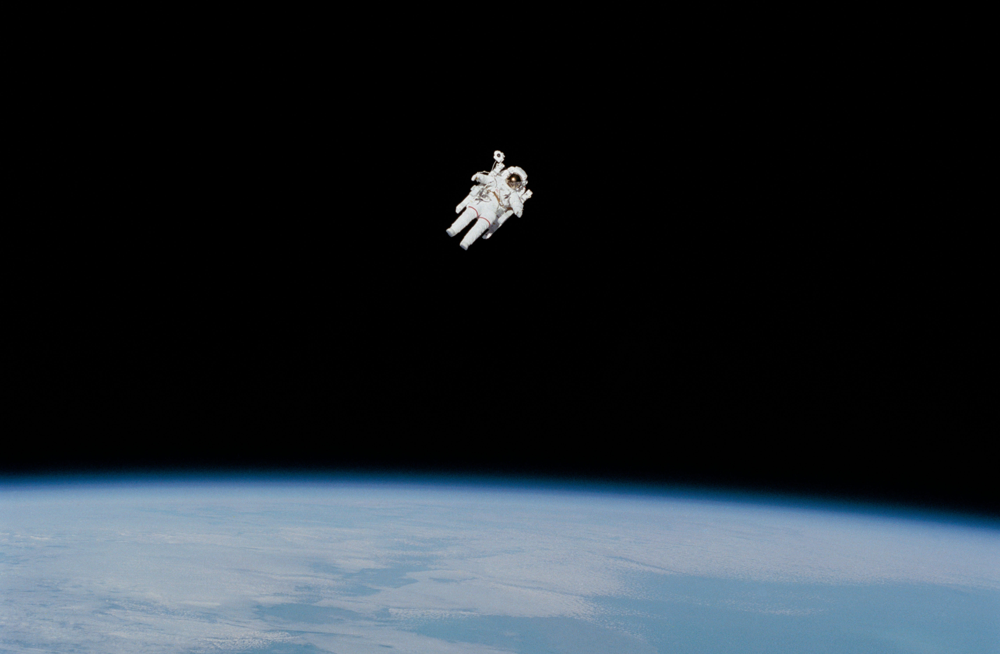
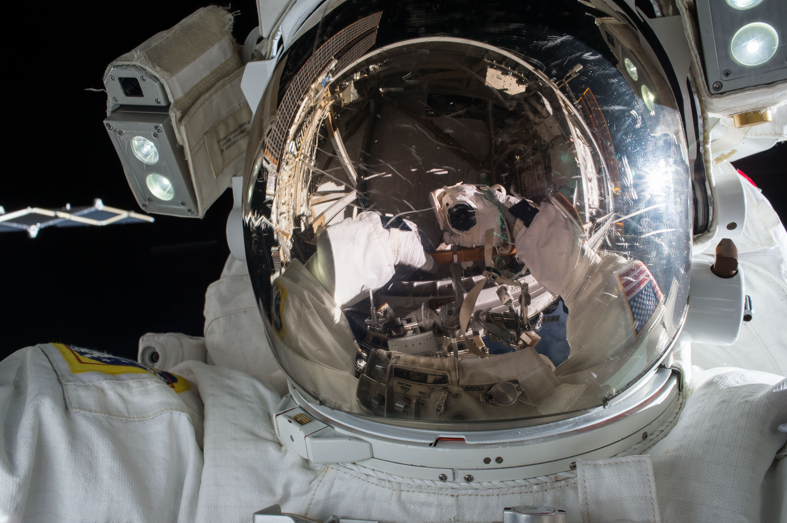

Photos
Photos of the Mercury Project (Started 1958)


Photos of the Gemini Project (Started 1965)


Photos of the Apollo Project (Started 1961)


Photos of the various SpaceX projects (Founded 2002)


